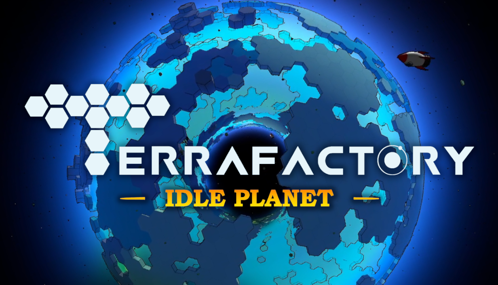
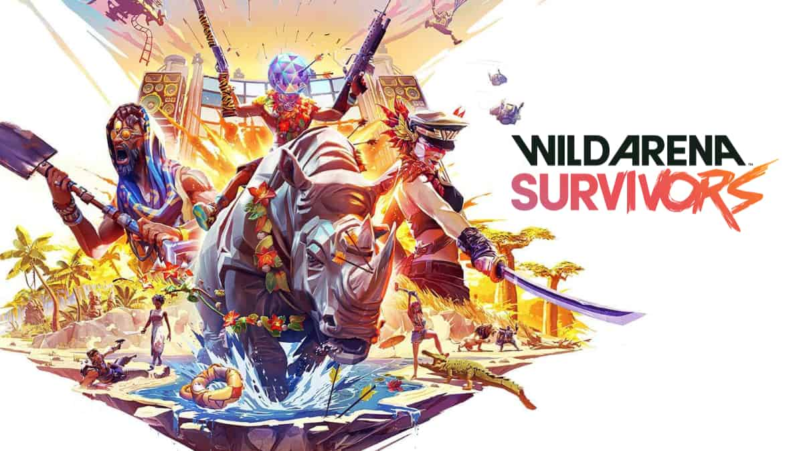
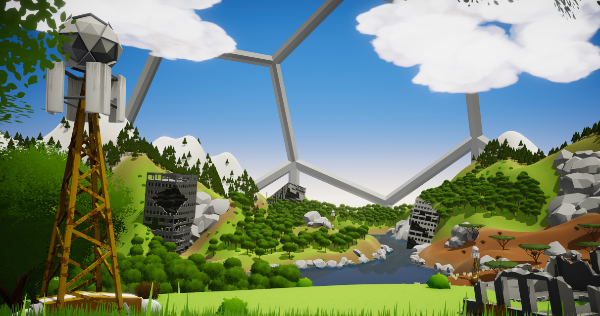
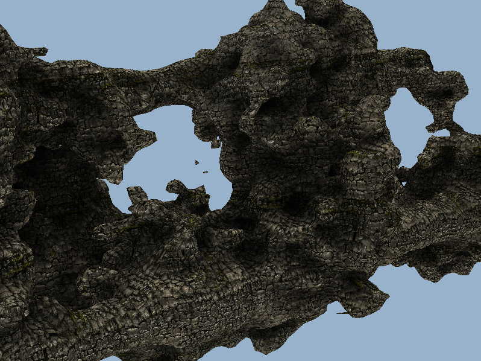
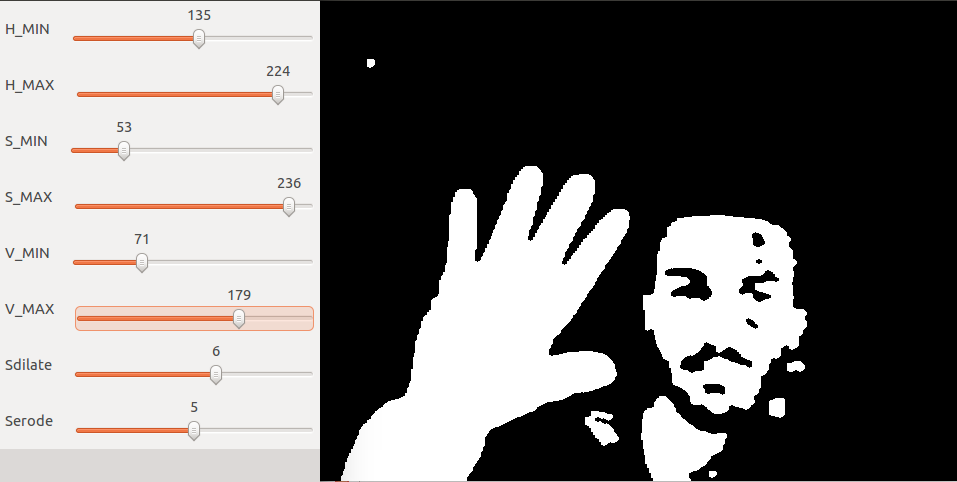

Portfolio

Terrafactory: Idle Planet
An incremental idle game about planet creation that sits on your desktop. Built solo with Unity's ECS/DOTS/Burst stack, originally as an experiment in Unity data oriented stack and procedural generation of hexagonal-based spheres (Goldberg polyhedron) for a factory game. The planet-creation mechanic emerged from that exploration and became the game.
Steam: store.steampowered.com/app/4240570/Terrafactory_Idle_Planet/

Champions Tactics: Grimoria Chronicles
A competitive multiplayer turn-based RPG using blockchain mechanics, with each in game figurine being an NFT.
Built on a microservices backend.
My main contributions:
- Early architecture & prototyping. On the project from inception to launch.
Helped shape the client/microservices architecture during the prototyping phase, and
contributed across the stack from there to release.
- Match, seasonality & leagues. Built the systems that run the server authoritative match, settle the result, and slot them into a competitive ladder that
resets and rewards players across seasons.
- Development environment. Owned the local development stack: quick computer setups, local services, fast feedback loops and low complexity for
every role in the team.
Website: championstactics.ubisoft.com/
Steam: store.steampowered.com/app/3546740/Champions_Tactics_Reforged/

Wild Arena Survivors
A multiplayer battle-royale with MOBA-style controls developed at Ubisoft for Mobile
(iOS/Android) and Nintendo Switch. The challenge: deliver a real-time PvP experience on
constrained hardware, on networks that range from fiber WiFi to spotty cellular. Three
and a half years of development on a custom ECS & MVC architecture.
My main contributions:
- Lag compensation. Implemented client prediction and server reconciliation so
that player movement and abilities feel responsive under variable latency, while keeping
the server authoritative against cheating.
- Headless client for load testing. Built a graphics-stripped console client that
could be spawned by the hundreds on a single machine, letting us simulate full matches
and stress-test the matchmaker, network layer and game servers before release.
- Skills & effects system. Designed the data-driven framework designers used
to author every ability in the game: networked, performant under heavy concurrent use,
and flexible enough to express a wide range of gameplay.
Trailer: youtube.com/watch?v=54qbXJP7L5s
Spinny Gun
A hyper-casual mobile game developed at Ubisoft for Ketchapp, released on Android and
iOS. Built during an 8-month hyper-casual period where I also developed an
internal SDK to accelerate prototyping and production, and worked through cycles of
prototyping, soft launches and KPI-driven iteration.
Android: play.google.com/store/apps/details?id=com.ketchapp.spinnygun
iOS: apps.apple.com/cm/app/spinny-gun/id1414961351

EcoSystem
Video game created with 16 students over three months for the Gamagora
Game Show 2018. EcoSystem is a management and exploration game built around environmental
awareness: the world constantly evolves depending on temperature, humidity and pollution,
and the ecosystem's balance shifts according to the player's actions.
On this project, I was responsible for the environment evolution, shaders and particle
systems. A significant part of my work focused on optimizing the world evolution, since
the ecosystem keeps simulating even far from the player. To address this, I implemented
a simulation Level-Of-Detail approach to improve performance.
Itch: gamagora.itch.io/ecosystem

Marching cubes / Parallax mapping
Experimenting on the generation of complex structures using the marching cubes
algorithm: a polygonal mesh is generated from an isosurface of a density function. The
goal was to reproduce a complex seabed-like terrain. Parallax mapping was then added on
top to give the textures more depth.
I first experimented with virtual displacement mapping on a flat surface, then used the
marching cubes algorithm to generate a more complex structure, and finally applied
parallax mapping to it.
The marching cubes implementation involved:
- Creation of a density function
- Listing the number of triangles and intersections
- Generation of the triangles
- Rendering the triangles

Painting with hands
A drawing application using image recognition: one hand is used
to paint on the window while the other switches between modes (painting, eraser, idle)
based on the number of fingers shown to the camera.
The project was decomposed into the following main parts:
- Hand detection: a color filter is applied to the image, then the hand contour
is extracted.
- Finger detection and counting: using the convex hull of the hand, we extract
the convexity defects. From the angles and distances between them, we deduce the number
of fingers.
- User interface: letting the user interact with the interface based on hand patterns.